Amateur Radio
About
- Obtained the callsign BG0FFH at the end of 2024.
- In 2020, I came across a video showing BG4QL receiving SSTV signals from the ISS, which sparked my strong interest in amateur radio.
- A friend gave me a Quansheng UV-K6, and I soon purchased a Yagi antenna to try receiving satellite signals.
- At the end of 2024, I passed the amateur radio operator exam and received my license.
- On January 9, 2025, I completed my first QSO via a local repeater with BG0EOQ.
- On January 27, 2025, I made my first satellite repeater QSO using the ISS repeater, contacting BG7QIW.
- I experimented with digital modes using the Yaesu FT-70DR, but due to the limited number of local digital-mode operators, I haven’t used it often.
- After learning about MMDVM, I purchased a duplex hotspot and began practicing English QSOs in the TG91 worldwide talkgroup.
- During a field activity, I met BG0EUQ and began learning about shortwave communication.
- I later acquired an ICOM IC-705 and a shortwave GP antenna to begin SWL on HF.
- In my spare time, I explored various communication modes with BG0EUQ, including D-STAR and RTTY.
- On May 23, 2025, I successfully made my first contact via the RS-44 linear transponder satellite with BG0EUQ.
- In August 2025, I obtained my amateur radio Class B license and began to explore shortwave..
My equipments
ICOM IC-705
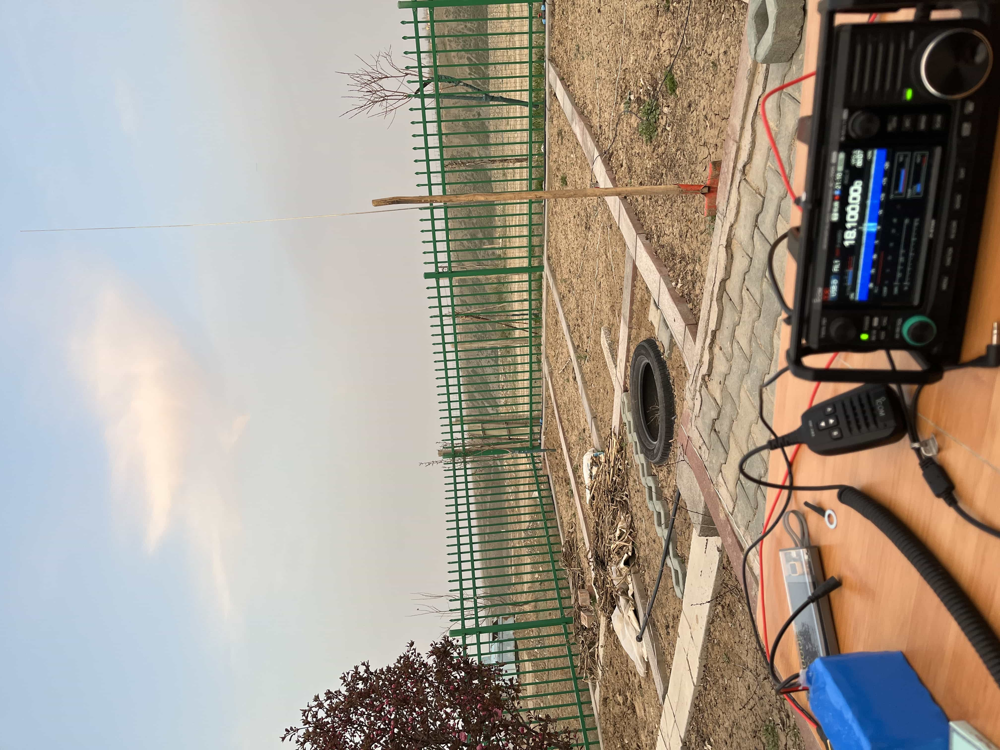
Quansheng UV-K6
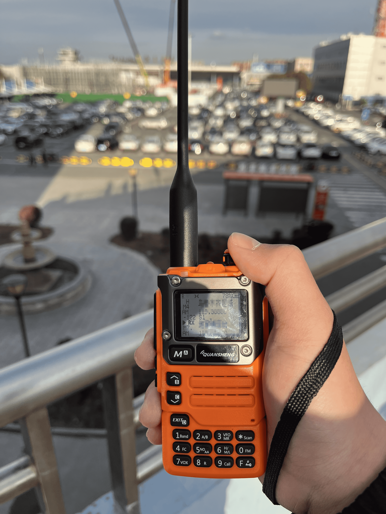
Yaesu FT-70DR
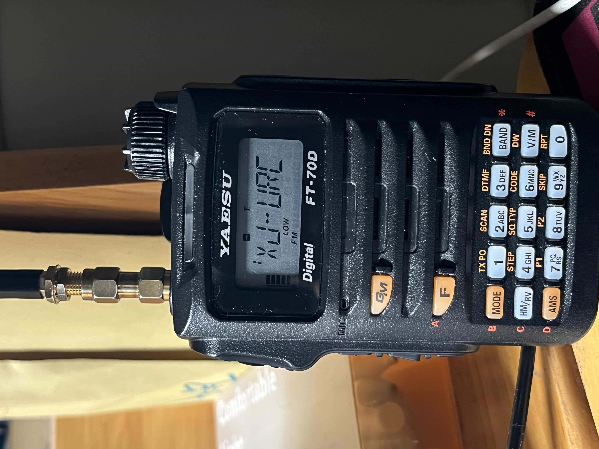
MMDVM hotspot & CWO

Activities
Contests
CQWW
Myself
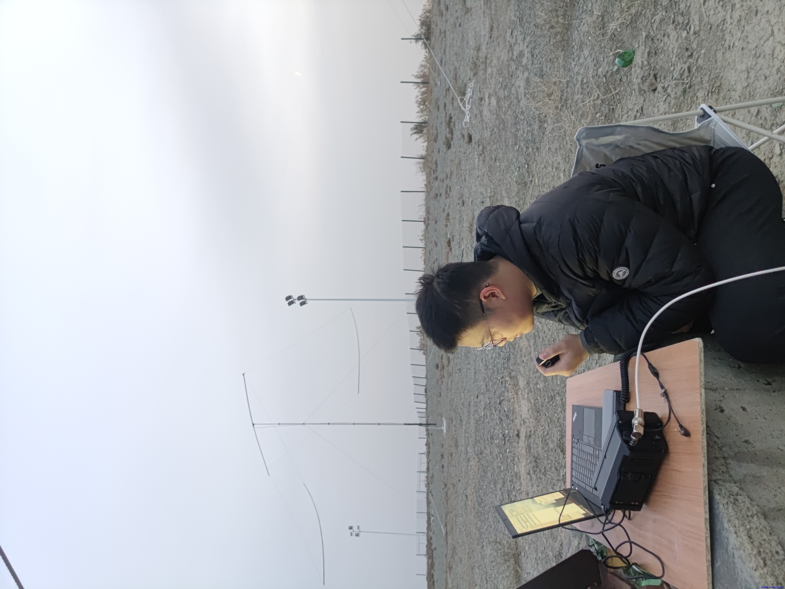
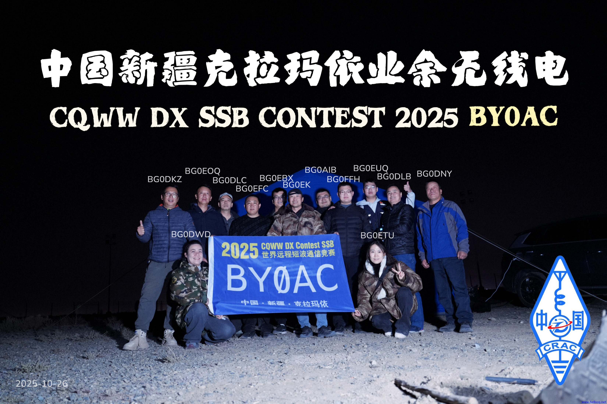
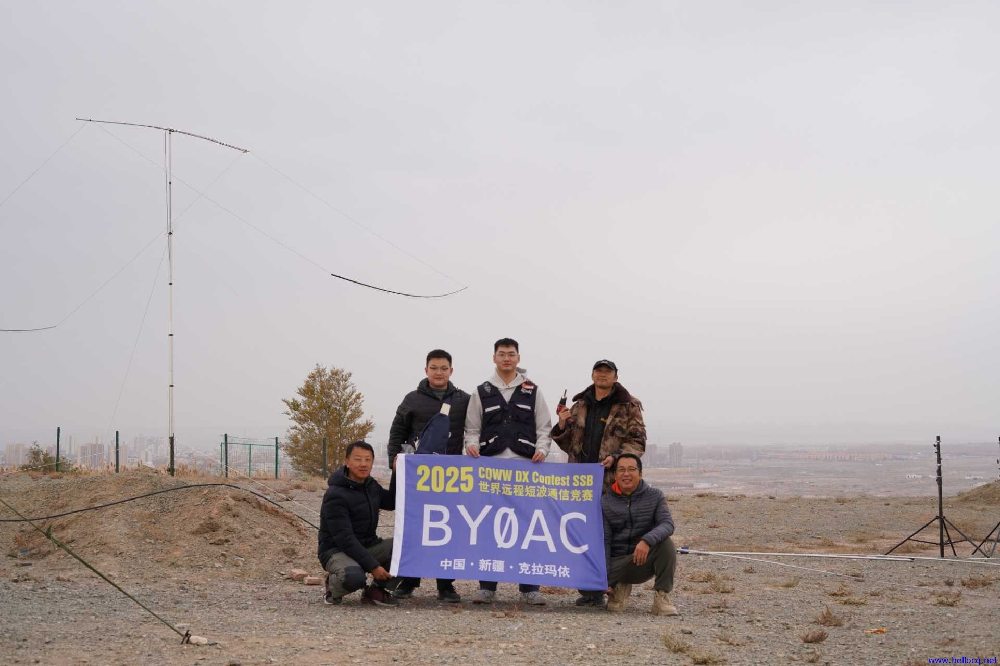
Satellite repeater
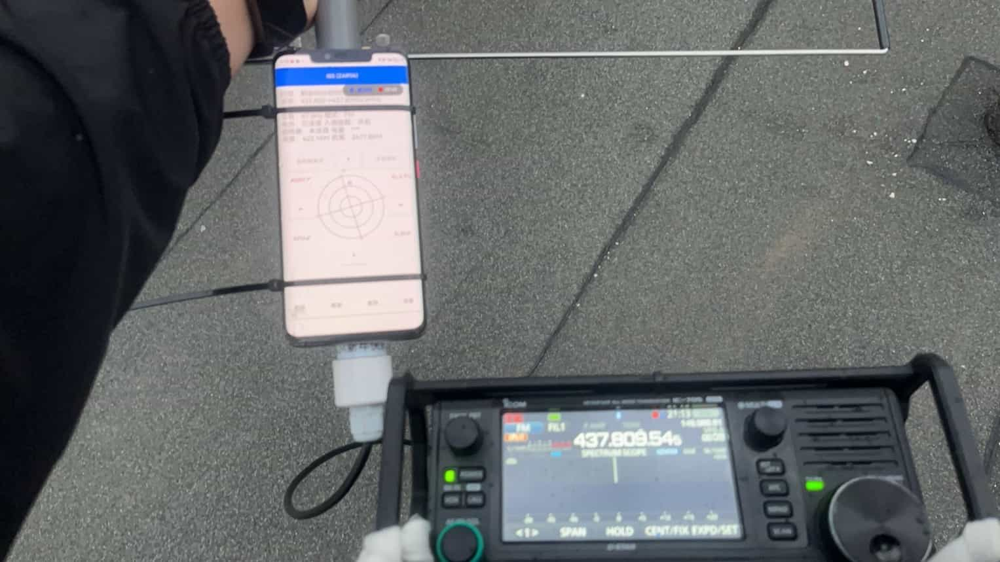
The first successful amateur radio test via the QO-100 satellite was achieved.
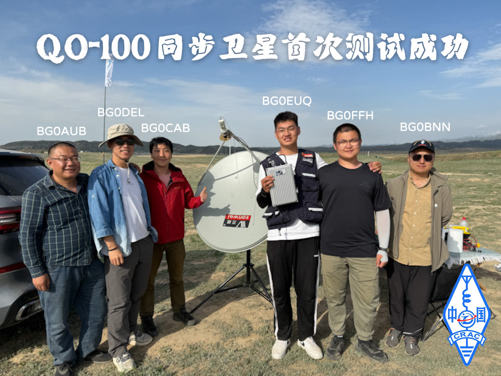
Field operation
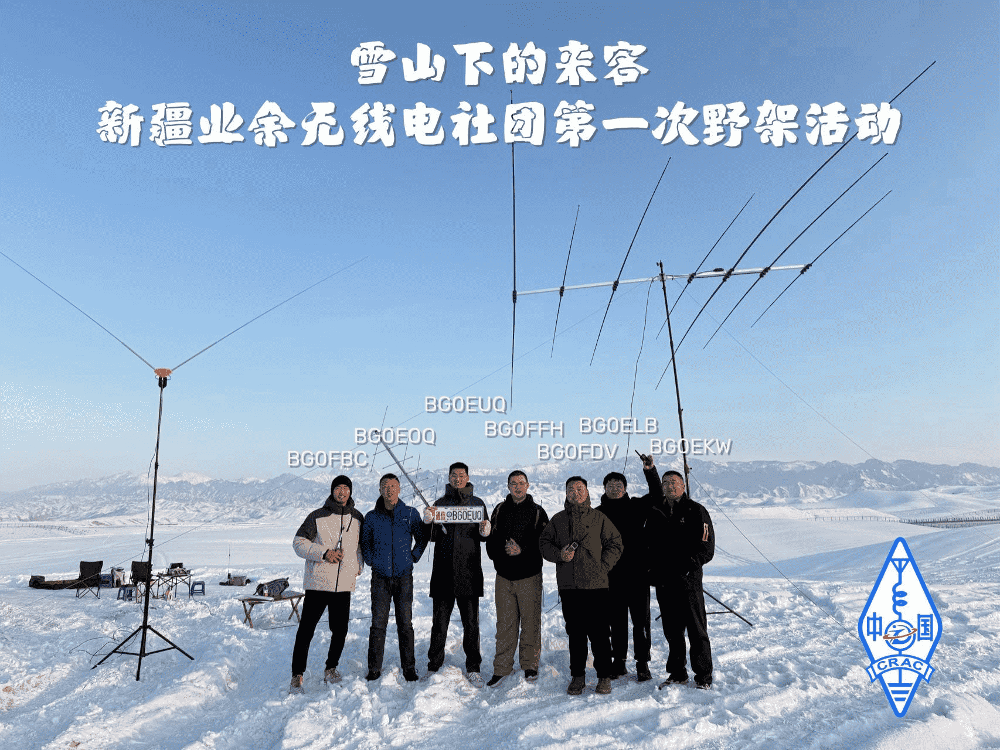
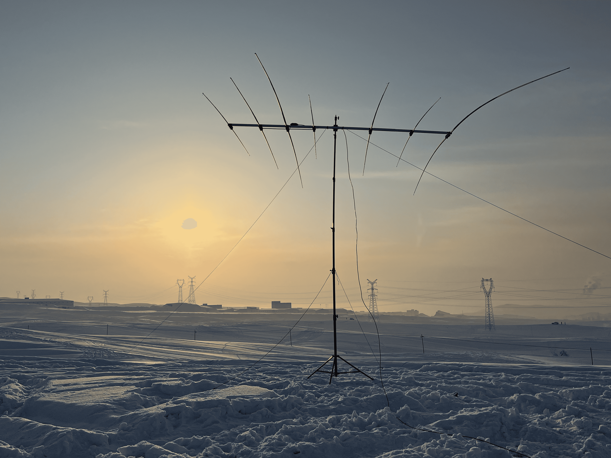
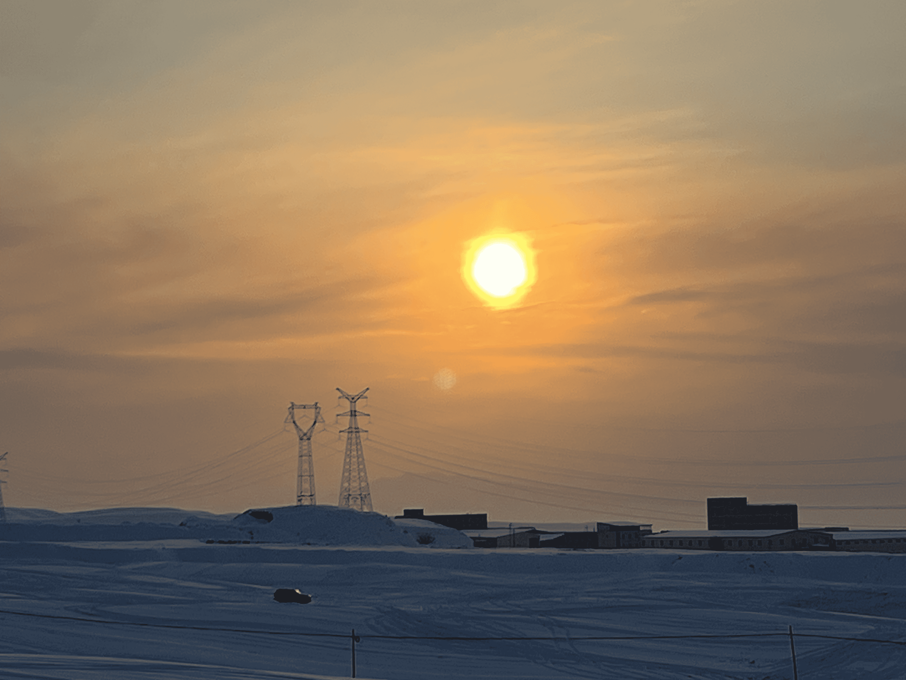
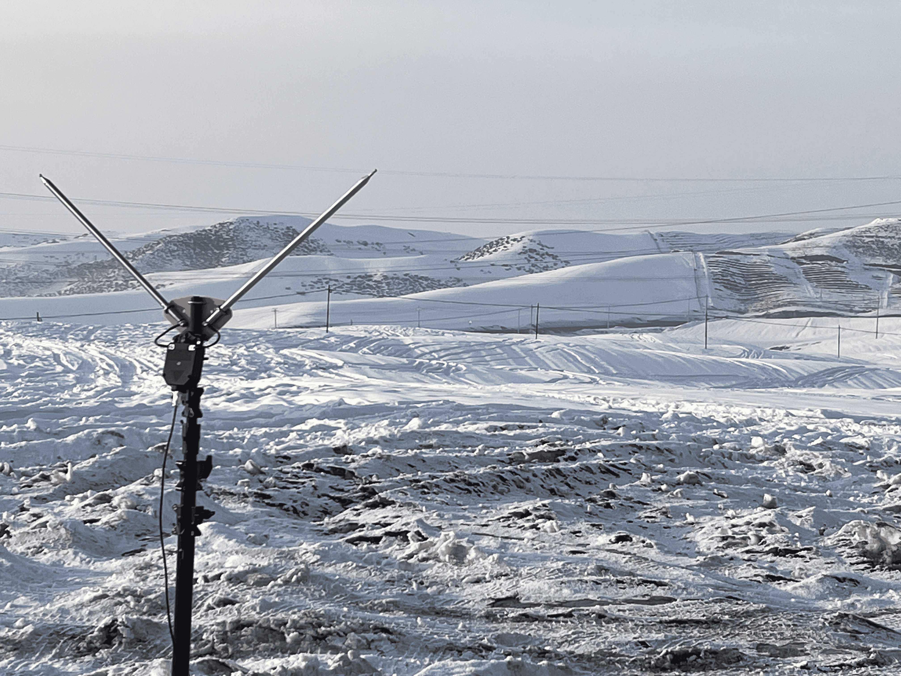